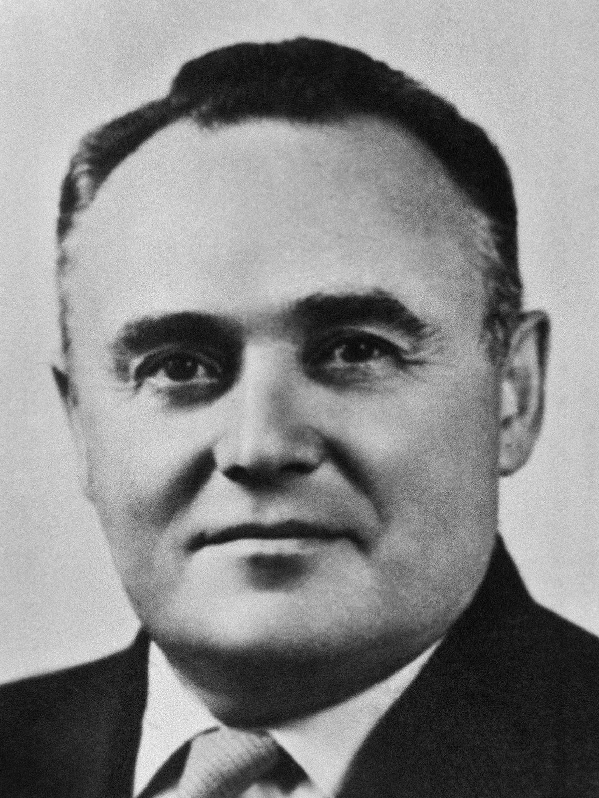

О музее - AstroPass
Добро пожаловать на страницу "О музее"! Здесь вы найдёте подробную информацию об истории, коллекциях, экспозициях и мероприятиях AstroPass. Мы приглашаем вас открыть для себя мир космонавтики и окунемся в увлекательную историю, представленную в наших залах.
История музея
Музей AstroPass был основан в 1961 году по инициативе С.П. Королёва, вскоре после полёта Гагарина, и открыт для посетителей в 1981 году. С момента открытия он стал главным хранителем истории освоения космоса. Важные этапы: Формирование экспозиции (60-70-е). Открытие для публики (1981). Включение международного сотрудничества (90-е). Реконструкция и новые технологии (2000-е). Сегодня – это культурный центр, вдохновляющий на новые открытия!
Наша миссия
Миссия AstroPass — сохранение, изучение и популяризация истории освоения космоса и современных космических достижений. Мы стремимся сделать космические исследования понятными и увлекательными для всех, кто интересуется наукой и космосом. Наша задача — вдохновлять людей на изучение космоса, развитие технологий и освоение новых горизонтов. Мы стремимся быть центром притяжения для исследователей, энтузиастов и всех, кто мечтает о звёздах, а также способствовать сохранению бесценного наследия космических открытий.
Коллекции и экспозиции

В Музее Космонавтики вас ждут: История покорения космоса: От первых спутников до Гагарина. Пилотируемые полёты: корабли «Союз», скафандры космонавтов. Исследование планет: луноходы, станции «Венера» и «Марс». Ракетная техника: Модели ракет-носителей. Международное сотрудничество: Совместные космические проекты. Уникальные экспонаты: спускаемый аппарат Гагарина, базовый блок «Мир». Что вы увидите: Корабли, станции, скафандры, макеты, интерактив! Временные выставки и мероприятия: следите за анонсами — выставки, встречи, лекции, фильмы!
Мероприятия и программы
В AstroPass: Экскурсии: обзорные, тематические, для всех возрастов (запись на сайте/по телефону). Лекции: научно-популярные от специалистов (расписание на сайте). Мастер-классы: сборка моделей, творчество (для детей и взрослых). Детские программы: Интерактивные занятия и игры. Космические квесты: Семейные приключения. Встречи с космонавтами: вопросы и ответы (анонсы на сайте). Кинопоказы: Фильмы о космосе. Тематические мероприятия: Праздники и события. Подробности - на сайте в разделе “Афиша”.
Контактная информация
Адрес: Улица Марины Цветаевой, 15, Королёв, Московская область
Телефон: +79363391688
Email: zelevarche@gmail.com
Сайт: AstroPass